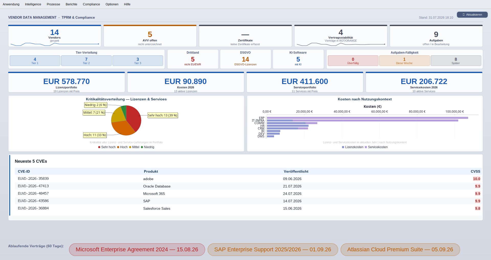
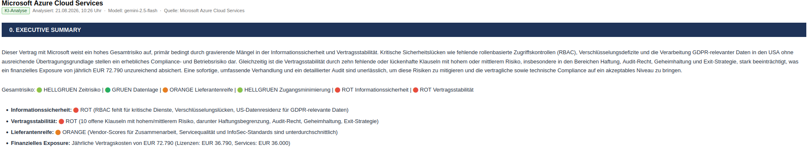
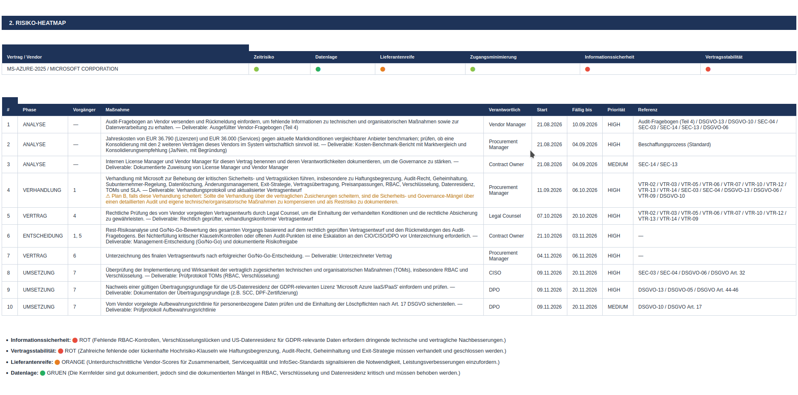
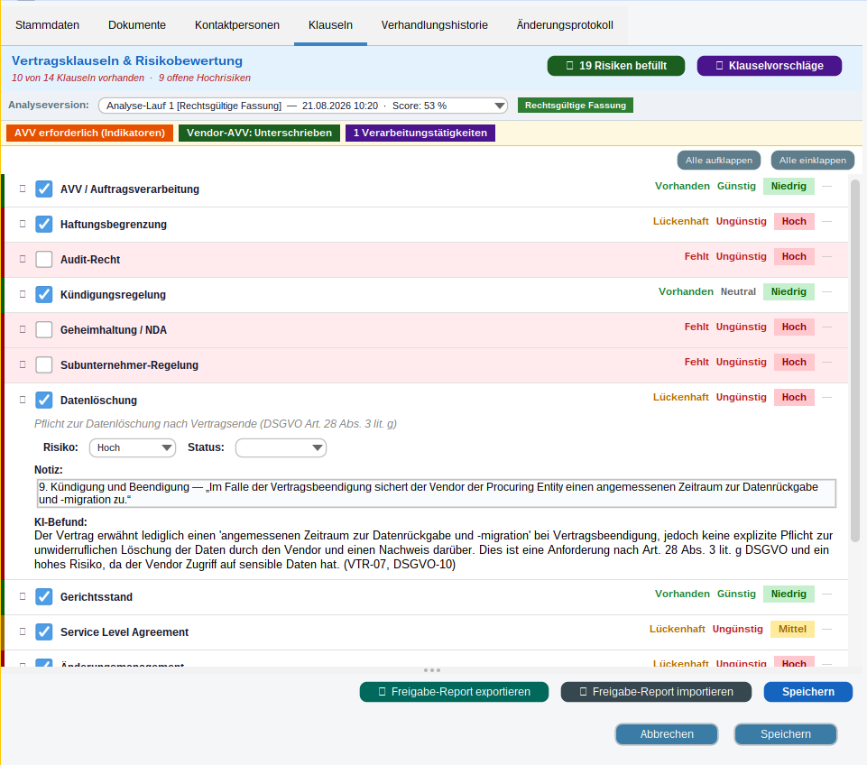
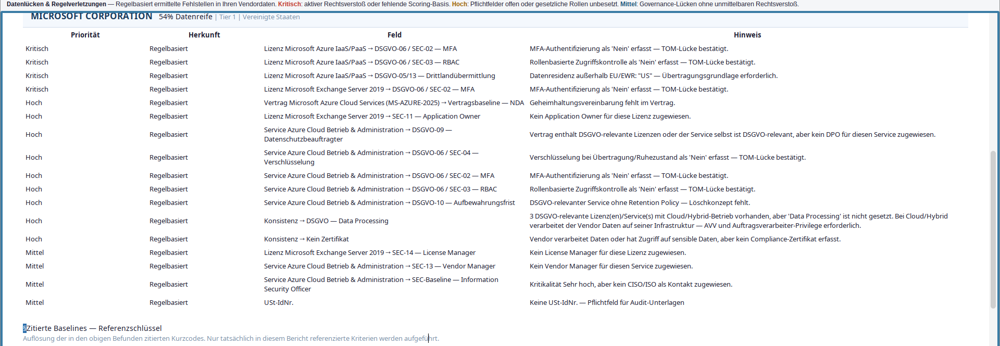
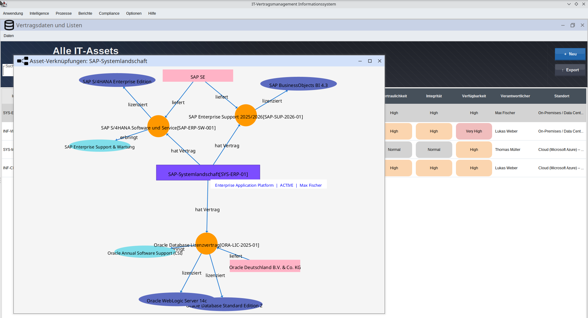
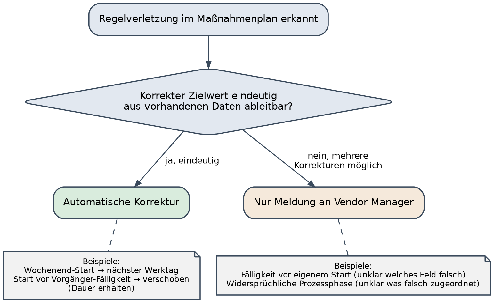
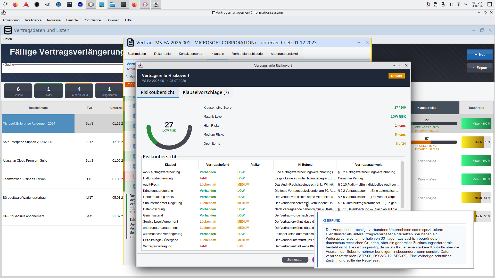
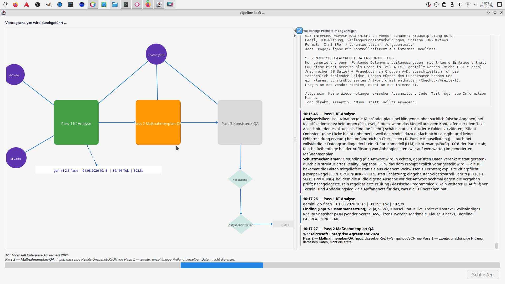
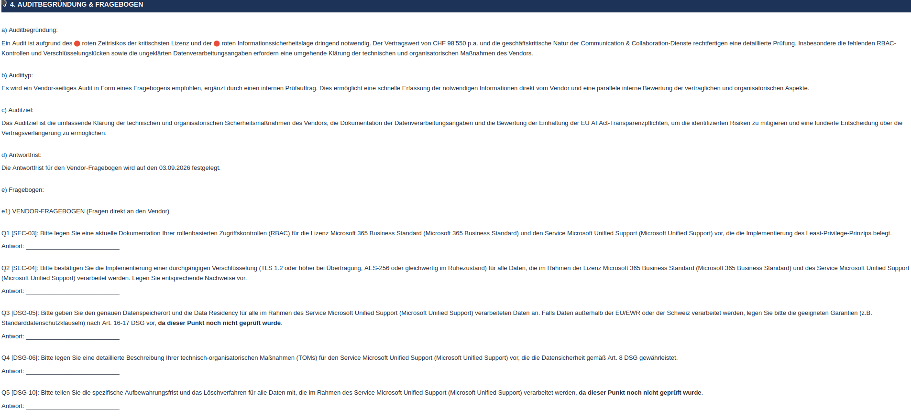

IT-Vendor- & Vertragsmanagement
Vendor Data Management ist auf IT-Vendoren spezialisiert. Die Anwendung zeigt auf einen Blick, welche Verträge, Lizenzen und Verantwortlichkeiten zu jedem Anbieter gehören, wo Informationen fehlen und wo Handlungsbedarf besteht.

Kein Generalisten-Tool für alle Einkaufskategorien: gebaut für IT-Verträge, -Lizenzen und -Vendoren.
Nicht jede KI-Aussage lässt sich deterministisch prüfen. Die Pipeline prüft, was geht — und sagt offen, was nicht.
Sie arbeiten direkt mit mir, von der Anforderungsanalyse bis zur Einführung.
Erweiterungen werden gemeinsam priorisiert und transparent umgesetzt.
Der Nutzen
Weniger verpasste Kündigungsfristen ist nur der Anfang. Der eigentliche Nutzen ist eine strukturierte Übersicht über Ihre gesamte Vertragslandschaft — inklusive Verantwortlichkeiten, offener Punkte und KI-gestützter Analyse.
Vollständigkeits-Score und Compliance-Status pro Vendor zeigen sofort, wo Informationen oder Zuständigkeiten fehlen.
Bei auslaufenden Verträgen liefert die KI einen Risikobericht mit konkreten Massnahmen — automatisch gegen Ihre Daten geprüft.
Ausschreibungsanfragen für IT-Leistungen entstehen KI-unterstützt direkt aus Ihren bestehenden Lizenz- und Servicedaten.
Bei kritischen Befunden erstellt die KI gezielt Audit-Fragebögen — strikt getrennt in externe Vendor-Fragen und internen Prüfauftrag.
Was die KI konkret liefert
Die KI übernimmt begrenzte Aufgaben: sie prüft auslaufende Verträge, sie erstellt bei kritischen Befunden gezielte Audit-Fragebögen, und sie hilft bei der Erstellung von Ausschreibungsanfragen. Bei der Vertragsanalyse wird das Ergebnis automatisch gegen Ihre hinterlegten Daten geprüft, bevor Sie es sehen. Der Ausschreibungsentwurf ist Zuarbeit, keine fertige Ausschreibung — Ihre fachliche Prüfung bleibt nötig.
Für einen Cloud-Service mit Zugriff auf sensible Daten stellte die KI in der Privilegien-Analyse fest, dass weder rollenbasierte Zugriffskontrollen (RBAC) noch Multi-Faktor-Authentifizierung dokumentiert waren, und ordnete das im Risikobericht als kritischen Sicherheitsmangel ein.
Für die Ablösung eines auslaufenden CRM-Lizenzvertrags erstellte die KI aus den hinterlegten Lizenz- und Nutzungsdaten einen RfX-Entwurf mit Anforderungs- und Fragenkatalog für alternative Anbieter. Der Einkäufer musste den Entwurf nur noch anpassen und freigeben.
Weil ein Vertrag ein rotes Zeit- und ein rotes Informationssicherheitsrisiko aufwies, erstellte die KI automatisch einen Audit-Fragebogen — strikt getrennt in einen externen Vendor-Fragebogen (nur was der Vendor selbst belegen kann) und einen internen Prüfauftrag, der nie an den Vendor geht.
Beispiele anonymisiert bzw. exemplarisch dargestellt.
Drei Modellaufrufe später hat der Plan trotzdem einen Fehler — die vierte, deterministische Schicht findet ihn
Ausführliche Fallstudie lesen →Das Produkt
Kennen Sie das: Der Vertrag mit automatischer Verlängerung läuft in drei Wochen aus — die Kündigungsfrist war aber schon vor zwei Monaten. Die einzige Stelle, an der das stand, war ein Excel-Sheet, das seit dem Ausscheiden des zuständigen Kollegen niemand mehr pflegt. Genau diese Lücke zwischen „irgendwo dokumentiert“ und „tatsächlich nachverfolgt“ schliesst Vendor Data Management.
Eine Desktop-Anwendung, die Vendor-, Vertrags- und Lizenzverwaltung aus genau solchen Tabellen herausholt. Kern ist ein Datenmodell Vendor → Vertrag → Lizenz/Service mit einer 14-Punkte-Vertragsklausel-Baseline (AVV, Haftungsbegrenzung, Audit-Recht, Kündigung, NDA, Subunternehmer, Datenlöschung, Exit-Strategie, Preisanpassung u. a.) und einem 0–100 %-Vollständigkeits-Score mit Gap-Tooltips pro Vendor, Vertrag, Lizenz und Service — damit eine Lücke auffällt, bevor sie zum Problem wird, nicht erst danach.
Compliance ist dabei keine Checkbox-Liste, sondern wird aus genau diesen gespeicherten Feldern abgeleitet. DSGVO-, EU-AI-Act- und ISO-42001-Prüfungen laufen über eine Tri-State-Aggregation (PASS / FAIL / UNCLEAR) statt einer einfachen Ja/Nein-Logik — ein gut dokumentierter Posten darf einen undokumentierten nie überdecken. Für jeden Vertrag wird zudem geprüft, ob intern überhaupt jemand benannt ist: Contract Owner, Legal Counsel, Vendor Manager, License Manager, Datenschutzbeauftragter. Gebaut für KMU. Der Quellcode ist derzeit nicht öffentlich.
Für Schweizer Kunden: dieselbe Compliance-Logik läuft wahlweise gegen das (revidierte) Schweizer Datenschutzgesetz (DSG) statt der DSGVO — eigene Baseline-Kriterien mit den passenden DSG-Artikeln, eine eigene Drittstaaten-Angemessenheitsliste nach Bundesrat-Kriterien (Art. 16–17 DSG) statt der EU/EWR-Prüfung, und CHF als Basiswährung. Umschaltbar pro Mandant, keine zwei getrennten Produktversionen.
Der Unterschied
Vertragliche Lücken bei IT-Lieferungen und -Leistungen werden erst im Kontext von Compliance- und Security-Baselines sichtbar. Genau dabei helfen ein geeignetes Datenmodell und KI — die meisten Vertragsmanagement-Tools bieten aber nur das Vertragsdokument, ohne Verknüpfung zu Liefergegenständen, Zugriffsrechten und internen Zuständigkeiten.

Ampel-Status, Kernrisiken und finanzielles Exposure in einem Absatz — für alle, die nur die erste Seite lesen.

Bis zu 12 Schritte mit Verantwortlichem, Termin und Baseline-Referenz — hier zehn Massnahmen für einen einzelnen Vertrag.

Jede Klausel mit KI-Befund, Vertragszitat und Risikoeinstufung — nachvollziehbar statt nur eine Zahl.

Regelbasiert ermittelte Fehlstellen je Kriterium, priorisiert nach Kritisch, Hoch und Mittel.

Ein SAP-System hängt gleichzeitig an einem Support-Vertrag und einer Oracle-Lizenz — eine Abhängigkeit, die in getrennten Listen unsichtbar bliebe.
Technisch
Architektur
Wer „Desktop-Anwendung“ hört, denkt oft an Software, die technisch stehengeblieben ist. Hier ist es eine bewusste Entscheidung: Vendor- und Vertragsdaten sind bei einem KMU meist die Verantwortung einer einzigen Person oder eines kleinen Teams — kein Fall für eine Multi-Tenant-Architektur mit hundert gleichzeitigen Nutzern. Und die Daten liegen immer beim Kunden — in-house oder bei einem Hosting-Provider der eigenen Wahl, nie physisch auf einem Server des Anbieters — nicht bei einem weiteren SaaS-Anbieter, für den man selbst wieder eine Auftragsbearbeiter-Beziehung dokumentieren müsste, und ohne das Vendor-Lock-in-Risiko eines geschlossenen Cloud-Backends.
Technisch ist die Anwendung trotzdem in klaren Schichten gebaut, nicht als ein grosser Klumpen. Die Fachlogik — Compliance-Checks, Risikobewertung, Vollständigkeits-Score — kennt Swing gar nicht und läuft komplett über eine eigene Service-Schicht, unabhängig von der Oberfläche.
Die Datenbank ist austauschbar — Derby eingebettet für den schnellen Test, PostgreSQL oder MariaDB für den produktiven Einsatz auf eigener Infrastruktur, per Konfiguration umschaltbar. Eine Spring-Boot-REST-API und ein React-Frontend stehen auf der Roadmap (aktuell: geplant, nicht gebaut) — als zusätzliche Schicht oben drauf, nicht als Neuschrieb: Die Service-Schicht ist genau dafür vorbereitet.
Hintergrund · Case Study
Vendor Data Management löst eine Pipeline aus, sobald ein Vertrag in 60 Tagen ausläuft: Sie liest den dokumentierten Datenstand, lässt ein LLM (Gemini) daraus einen Analysebericht samt Massnahmenplan erstellen — und prüft das Ergebnis anschliessend gegen dieselben Daten zurück, mit reiner Programmlogik.
Ablauf und Prüflogik sind in einer Transferarbeit an der Berner Fachhochschule dokumentiert, begründet und mit 25 gezielten Tests abgesichert (2026).
Pass 2 und Pass 3 stammen aus derselben Modellklasse wie Pass 1 und tragen dieselbe Unsicherheit. Die Forschung zeigt: Ein Modell verifiziert eine Lösung nicht zuverlässiger, als es sie erzeugt.
Die KI übernimmt, was Kontextverständnis braucht. Formal eindeutig entscheidbare Anforderungen — Chronologie, Prozessreihenfolge, Vollständigkeit — prüft klassische Softwarelogik. Was beides nicht ist, bleibt beim Menschen.
Ein Massnahmenstart am Wochenende hat genau eine Korrektur, also wird er verschoben. Ein Fälligkeitsdatum vor dem eigenen Start hat mehrere mögliche, also wird nur gemeldet, nie geraten.

Jeder Teil ist für einen anderen Leser gedacht — den, der nur die erste Seite liest, und den, der anschliessend die Verhandlung führt.
Ampel-Status, finanzielles Risiko, 3–5 Kernfakten. Für alle, die nur die erste Seite haben.
Sechs feste Betrachtungsebenen statt freier Prosa: Geschäftsbereich & strategische Relevanz, Laufzeiten & Fristen, Vendor-Performance, Privilege-Analyse, Informationssicherheit & Datenschutz, Verhandlungsstrategie.
Nicht von der KI erfunden: Die App rendert die Heatmap deterministisch aus den gespeicherten Signalen — die KI liefert nur die Überschrift.
Bis zu 12 Schritte, jeder mit Phase, benanntem Verantwortlichen (Legal Counsel, CISO, Procurement Manager …), Start- und Fälligkeitsdatum sowie zitierter Baseline-Referenz. Die Verhandlungsphase bekommt zusätzlich einen Plan B.
Nur ausgelöst, wenn eine echte Risikoschwelle überschritten ist — sonst ein Satz: „Kein Audit empfohlen.“ Wenn ja: strikt getrennt in einen externen Vendor-Fragebogen (nur was der Vendor selbst belegen kann) und einen internen Prüfauftrag (Klauselprüfung, BCM-Planung — geht nie an den Vendor raus), exportierbar als ausfüllbares Excel.
Live-Test, 31.07.2026
Für einen synthetischen Testvertrag (fiktiver Anbieter, absichtlich mehrere offene Lücken) durchlief ein kompletter Pipeline-Lauf alle drei KI-Durchgänge. Das Ergebnis: ein Massnahmenplan mit neun Schritten, plausibel klingend, gut referenziert. Die anschliessende regelbasierte Prüfung fand trotzdem etwas, das drei Modellaufrufe übersehen hatten — die Unterschrift war später terminiert als das Vertragsende selbst.
Der zweite Teil war ein manueller Gegencheck: jede im Bericht zitierte Zahl — Vendor-Scores, Kosten, Vertragsdaten, Klausel-Status — von Hand gegen die tatsächlichen Ausgangsdaten geprüft. Keine einzige Abweichung. Das eigentliche Ergebnis ist nicht "die KI lag falsch", sondern: eine KI-Pipeline ist erst dann vertrauenswürdig, wenn eine unabhängige, nicht-KI-basierte Instanz nachrechnet — und wenn man das auch tatsächlich testet, nicht nur annimmt.



Kontakt & Einstieg
Ob Erstgespräch, konkrete Frage zum Produkt oder individuelle Anforderung: der Kontakt läuft direkt über mich, nicht über ein Ticketsystem.
Fehlt eine Funktion, die Sie brauchen? Als Entwickler des Tools setze ich individuelle Anforderungen direkt um, statt sie auf eine allgemeine Produkt-Roadmap zu vertrösten.
Onboarding
Der Einstieg erfolgt vor Ort beim Kunden: bestehende Daten aus Excel-Listen, Vertragsablagen oder vorhandenen Systemen werden eingespielt, vorhandene Systeme angeschlossen. Sie beginnen mit Ihrem tatsächlichen Datenstand, nicht mit einer leeren Datenbank.
Termin
30 Minuten, unverbindlich: Wir klären Ihren Bedarf und ob Vendor Data Management passt.
Kontakt
Für alles, was keinen Termin braucht: Fragen zum Produkt oder zu individuellen Anforderungen.